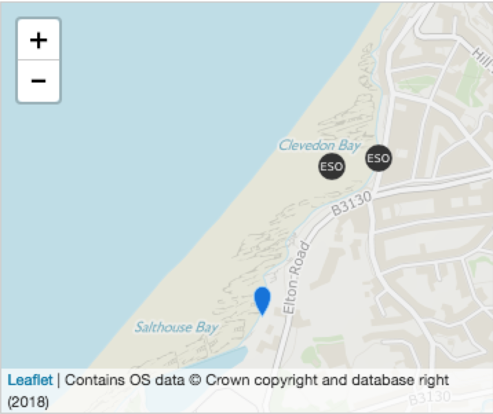

Clevedon Beach

Synopsis
Clevedon Beach is on the Somerset coast overlooking the Bristol Channel. It is a sand and pebble beach, approximately 850 metres wide, backed by the promenade and the town. There is a marine lake at the beach which is filled by sea water on high tides.
Pollution Risk Forecast
This bathing water is subject to short term pollution. Short term pollution is caused when heavy rainfall washes faecal material into the sea from livestock, sewage and urban drainage via rivers and streams. At this site the risk of encountering reduced water quality increases after rainfall and typically returns to normal after 1-3 days. The Environment Agency makes daily pollution risk forecasts based on rainfall patterns and will issue a pollution risk warning if heavy rainfall occurs to enable bathers to avoid periods of increased risk. The Environment Agency works to reduce the sources of this pollution through pollution prevention measures, work with agriculture and water companies. 24 warnings advising against swimming due to an increase risk of short term pollution were issued in 2016 for Clevedon Beach bathing water. These warnings were issued because of the effects of heavy rain on the water quality.
Web

Historical classifications
2017 classification good
2016 classification good
2015 classification good
2014 classification good
good
2016 classification good
2015 classification good
2014 classification good
Sampling Point Location
Bathing Water Manager
Keris Peters
keris.peters@somerset.gov.uk